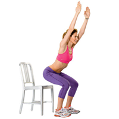

Leg Exercises

Begin standing with your back to a chair, feet hip-width apart.
While keeping your weight centered on your heels, draw in your abs and hinge forward at the hips slowly lowering your butt toward the chair.
Pause right before you would sit down and return to standing while keeping the core engaged.
Do 3 sets of 10-15 reps.